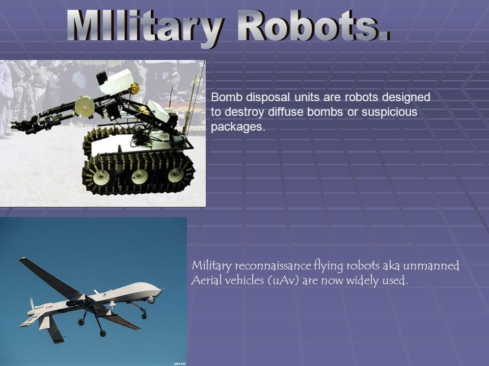
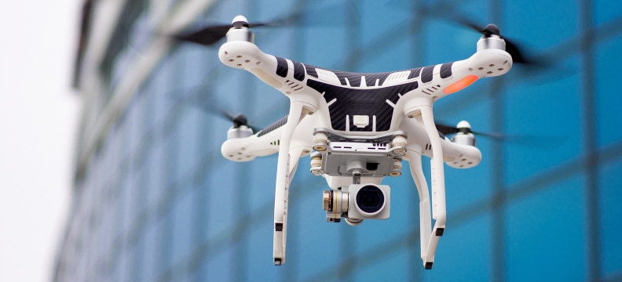
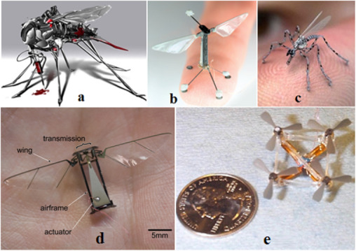
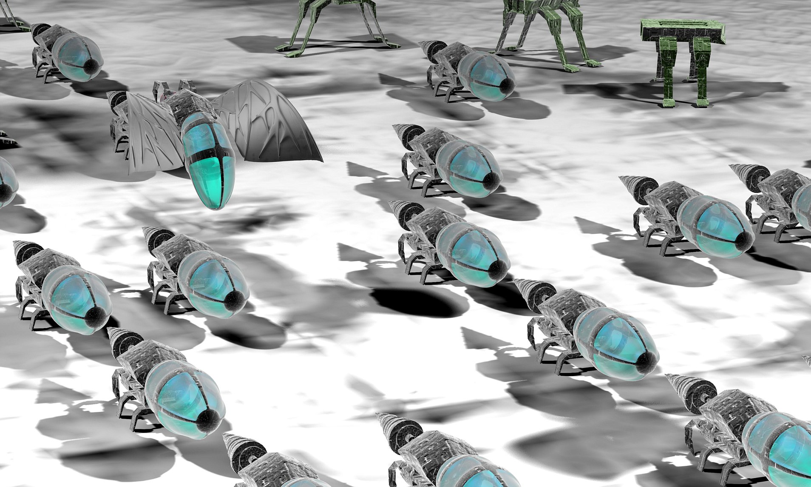

Defense forces from different countries across the globe are embedding
AI into weapons and other systems used on land, naval, airborne, and
space platforms. Using AI in systems based on these platforms has
enabled the development of efficient warfare systems, which are less
reliant on human input. It has also led to increased synergy and
enhanced performance of warfare systems while requiring less
maintenance. AI is also expected to empower autonomous and high-speed
weapons to carry out collaborative attacks.
AI techniques are being developed to enhance the accuracy of target
recognition in complex combat environments. These techniques allow
defense forces to gain an in-depth understanding of potential operation
areas by analyzing reports, documents, news feeds, and other forms of
unstructured information. Additionally, AI in target recognition systems
improves the ability of these systems to identify the position of their
targets. Capabilities of AI-enabled target recognition systems include
probability-based forecasts of enemy behavior, aggregation of weather
and environmental conditions, anticipation and flagging of potential
supply line bottlenecks or vulnerabilities, assessments of mission
approaches, and suggested mitigation strategies. Machine learning is
also used to learn, track, and discover targets from the data obtained.
For example, DARPA’s Target Recognition and Adaption in Contested
Environments (TRACE) program uses machine learning techniques to
automatically locate and identify targets with the help of
Synthetic-Aperture Radar (SAR) images.
In war zones, AI can be integrated with Robotic Surgical Systems (RSS)
and Robotic Ground Platforms (RGPs) to provide remote surgical support
and evacuation activities. The US in particular is involved in the
development of RSS, RGPs, and various other systems for battlefield
healthcare. Under difficult conditions, systems equipped with AI can
mine soldiers’ medical records and assist in complex diagnosis. For
instance, IBM’s Watson research team partnered with the US Veterans
Administration to develop a clinical reasoning prototype known as the
Electronic Medical Record Analyzer (EMRA). This preliminary technology
is designed to use machine learning techniques to process patients’
electronic medical records and automatically identify and rank their
most critical health problems.
Data Information Procedure
AI is particularly useful for quickly and efficiently processing large
volumes of data in order to obtain valuable information. AI can assist
in culling and aggregating information from different datasets, as well
as acquire and sum supersets of information from various sources. This
advanced analysis enables military personnel to then recognize patterns
and derive correlations.
more details about AI for technology in military.
Military
technology, range of weapons, equipment, structures, and vehicles used
specifically for the purpose of warfare. It includes the knowledge
required to construct such technology, to employ it in combat, and to
repair and replenish it. The technology of war may be divided into five
categories. Offensive arms harm the enemy, while defensive weapons ward
off offensive blows. Transportation technology moves soldiers and
weaponry; communications coordinate the movements of armed forces; and
sensors detect forces and guide weaponry.
details

One of the most impressive aspects of these robots is their ability to
“sense” or measure inertia, distance, and altitude. The shape of the
assembled drone, as well as the placement of each rotor, affects how it
will fly. When the finished unit takes off, half the rotors turn
clockwise, while the other half turn counter-clockwise to reduce torque
and promote stability. Scientists conducted a number of indoor flight
experiments to see how the unit responded to disturbances or other
feedback.
details

Many of the commercial products today are based on military innovations.
Let’s only think of semiconductors or telecommunications if not at
automotive and aviation. However, started with the internet example for
a reason: there is a point where such technologies available on consumer
use sometimes lead to being against individual freedom. It’s only a few
months since the European Parliament has rejected ACTA, making the
controversial trade agreement effectively gone – at least for the
moment. The Anti-Counterfeiting Trade Agreement, which has been called
“more dangerous than SOPA,” at one point had support from many
governments around the world, including the U.S., the UK and Japan. And
now let’s look at one of the latest military innovations: The image
above shows an “Insect Spy Drone” already in production. It can be
controlled from a great distance and is equipped with a camera and
microphone. It can land on you and use its needle to take a DNA sample
with the pain of a mosquito bite. Eventually, it can inject a micro RFID
tracking device under your skin. You may even take it home without
noticing it or, alternatively, it can fly into your house through a
window. Of course, at this point it’s only for military use but once the
technology gets cheaper, mass production would not be a problem. The New
York Times mentions that the Pentagon has about 7,000 aerial drones
(there may be even more now, this figure was released last year),
compared with fewer than 50 a decade ago. On one hand, commercial spying
can be taken to worse peaks than we imagined but, on the other hand, the
individual freedom and our individual right to privacy may soon become
history. How do you think this particular innovation will change our
world? for more details you could
search here.

Nano Robotics can be defined as the technology of creating machines or
robots close to the microscopic scale of a nanometer (10−9 meters).
Nanorobotics refers to nanotechnology, an engineering discipline for
designing and building nanorobots. These devices range from 0.1-10
micrometers and are made up of nano scale or molecular components. As no
artificial, non-biological Nano robots have yet been created, they
remain a pretending concept. The names nanorobots, nanoids, nanites or
nanomites have also been used to describe these hypothetical devices.
Nano robots would be used in different application areas such as
medicine and space technologies. Nowadays, these nanorobots play a
crucial role in the field of Bio-Medicine, particularly for the
treatment of cancer, cerebral Aneurysm, removal of kidney stones,
elimination of defected parts in the body structure, and for some other
treatments that need utmost support to save human lives. This Nanorobots
are nano devices used for the purpose of maintaining and protecting the
human body and the structure against pathogens. Nanorobots are
implemented by using several components such as sensors, actuators,
control, power, communication and by interfacing cross-special scales
between organic inorganic systems.
details